Abstract
While pretrained visual navigation models provide useful waypoint guidance for mapless navigation, their outputs are often coarse and geometry agnostic. In particular, they do not explicitly account for local obstacles, robot motion constraints, or command feasibility. To bridge this gap, this paper proposes a hierarchical modular navigation framework that combines a general navigation model with physically grounded local planning. The framework contains three core components: (1) a vision-based waypoint sub-goal generator that predicts waypoint sequences; (2) a plug-and-play local planner that performs collision checking and smooth trajectory selection; and (3) a control execution and recovery module that supports closed-loop robustness. Notably, the system operates entirely without a global map or global localization. Extensive evaluations across IR-Sim, Gazebo, and real-world platforms show encouraging improvements in the tested mapless navigation tasks. The results indicate that waypoint guidance, local geometry, and robot motion constraints can be connected through a modular interface for practical deployment.
System Overview
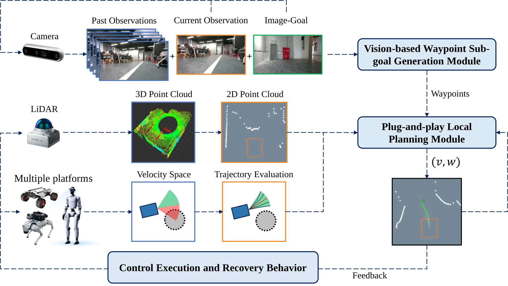
- A hierarchical navigation framework is developed to connect vision-based waypoint guidance with physically grounded local planning for mapless navigation without prior environmental maps.
- A plug-and-play mapless execution interface is designed to convert waypoint guidance into dynamically feasible and collision-free local motion trajectories.
- Simulation and real-world experiments across multiple platforms are conducted to evaluate the framework in obstacle avoidance tasks and to analyze its performance against traditional local planners under matched deployment settings.
Simulation Results
IR-Sim Simulation
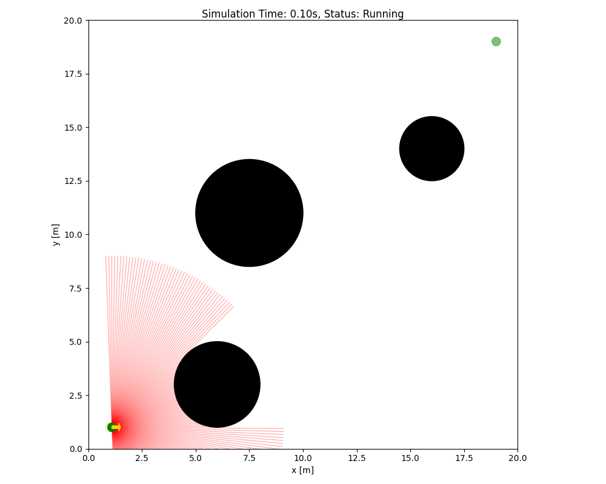
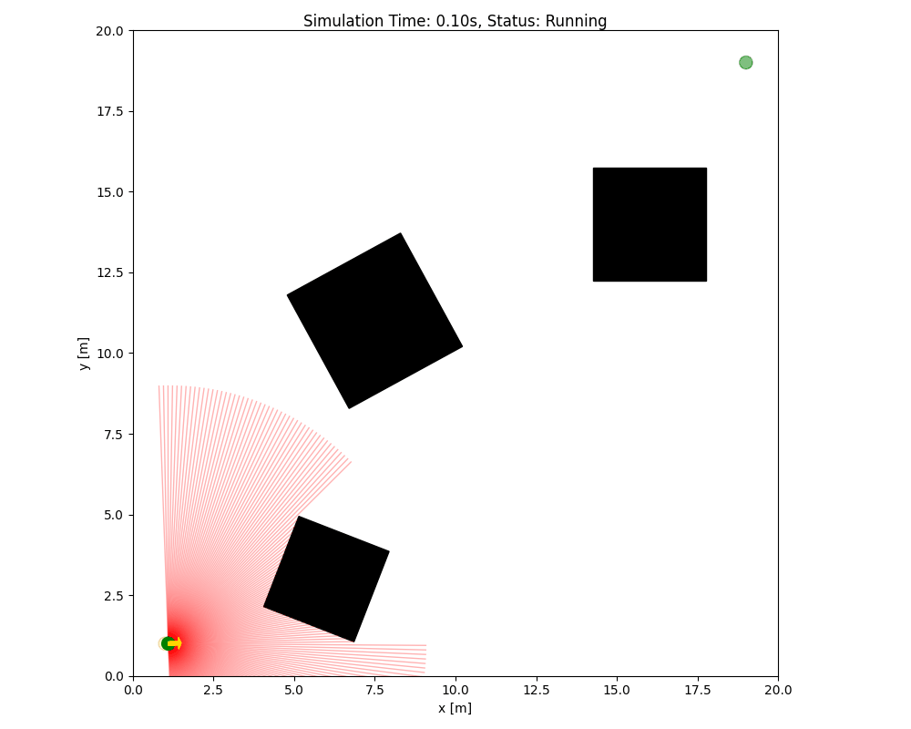
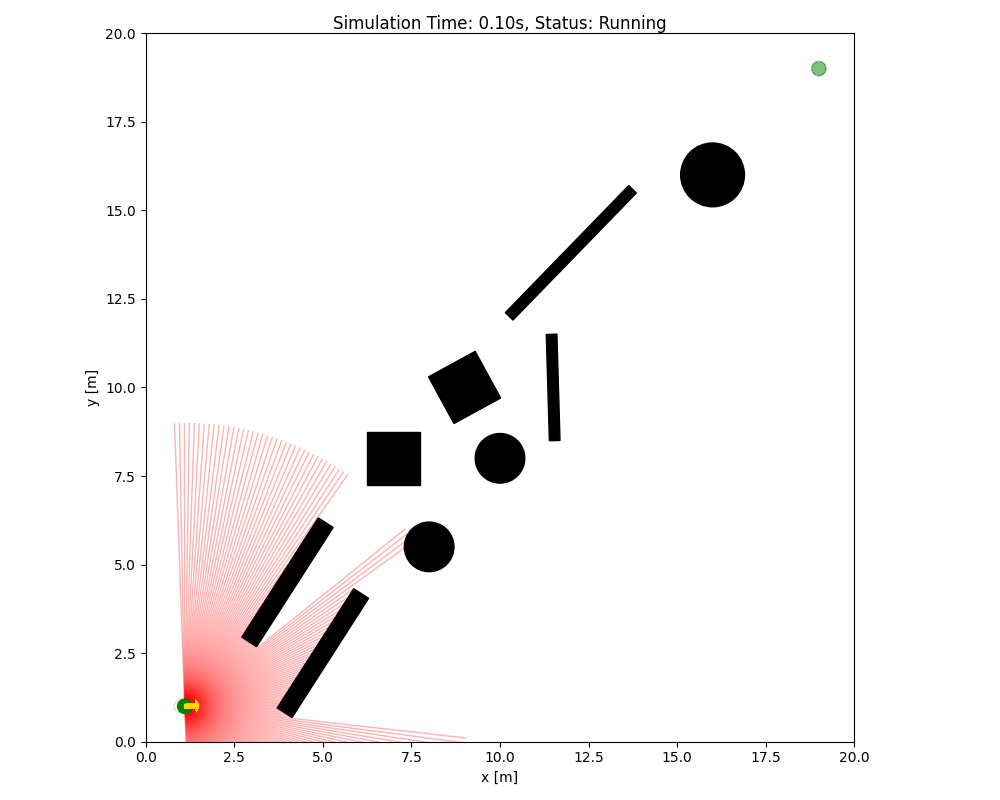
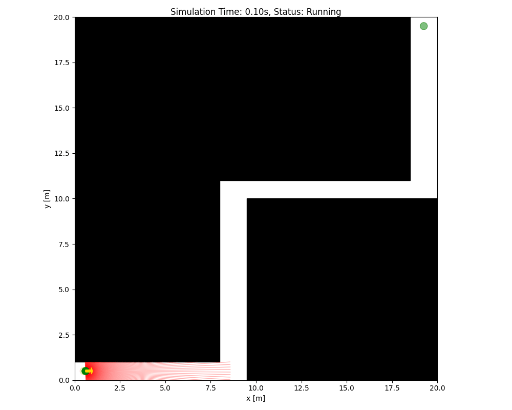
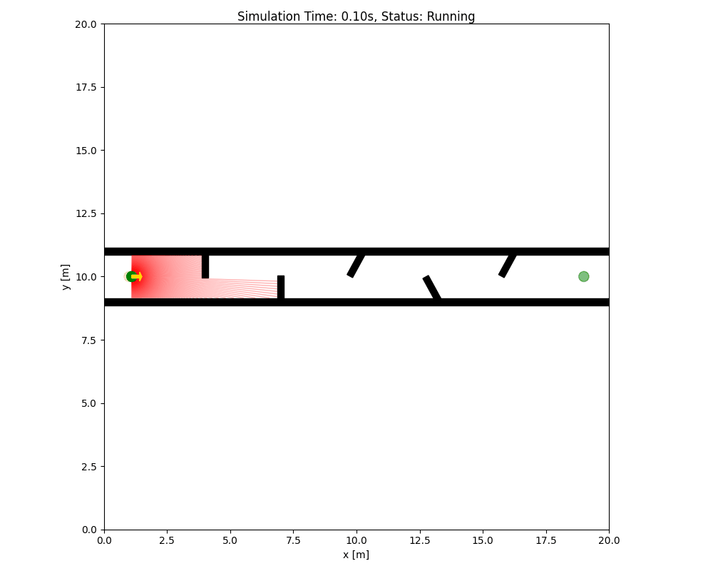
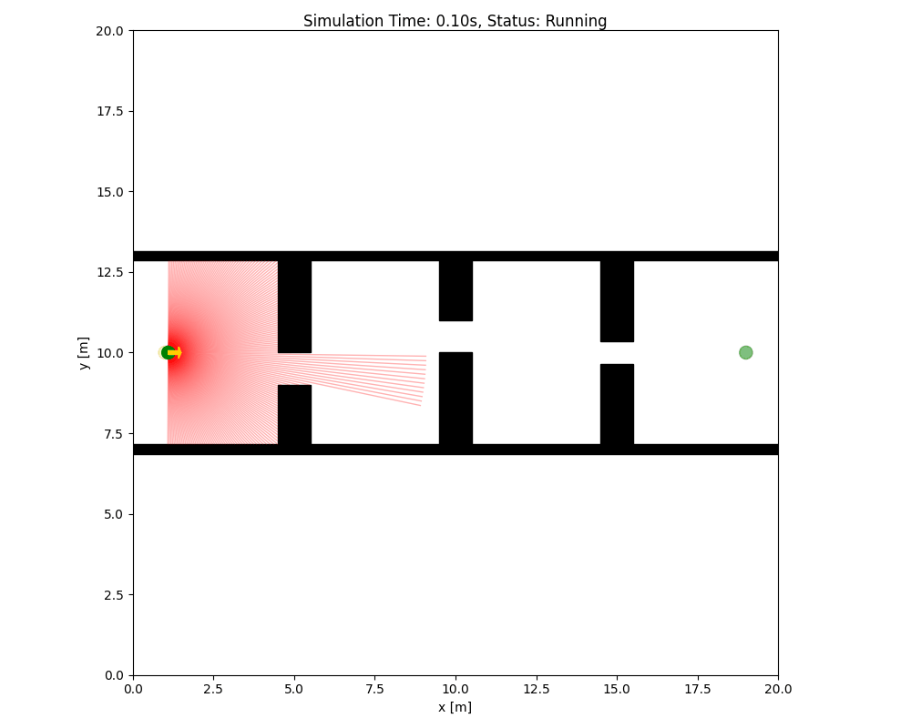
Gazebo Simlation
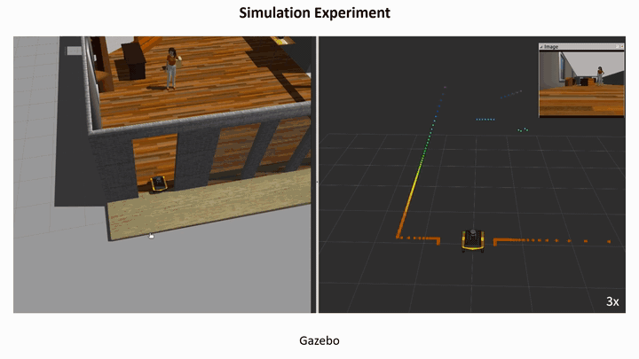
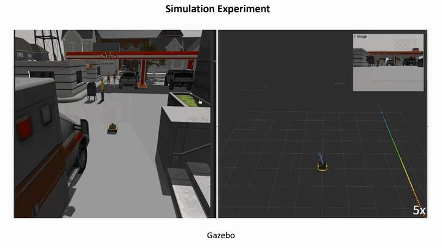
Real-World Experiments
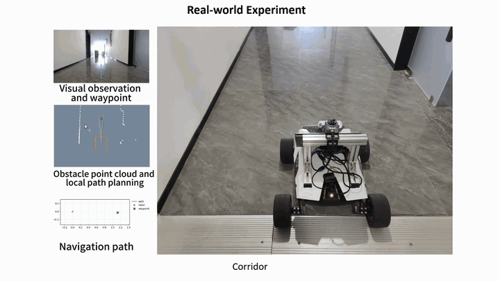
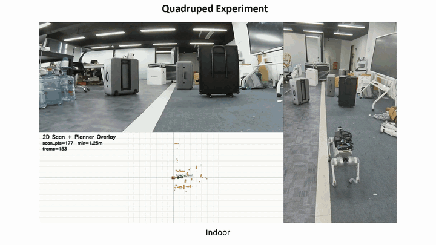
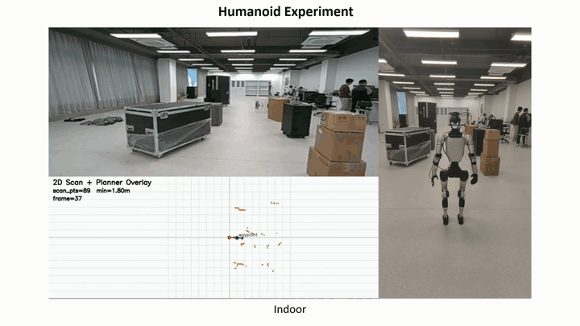